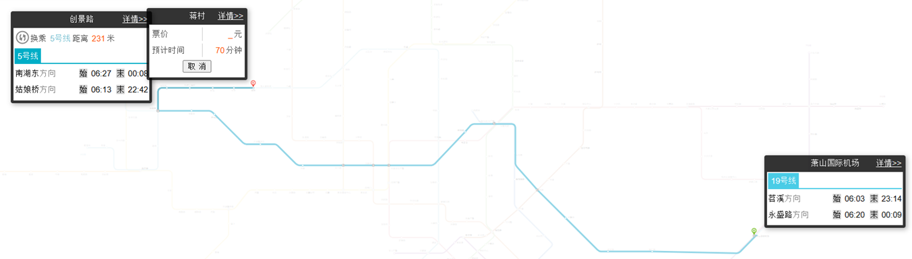
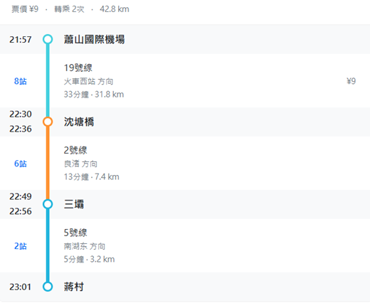
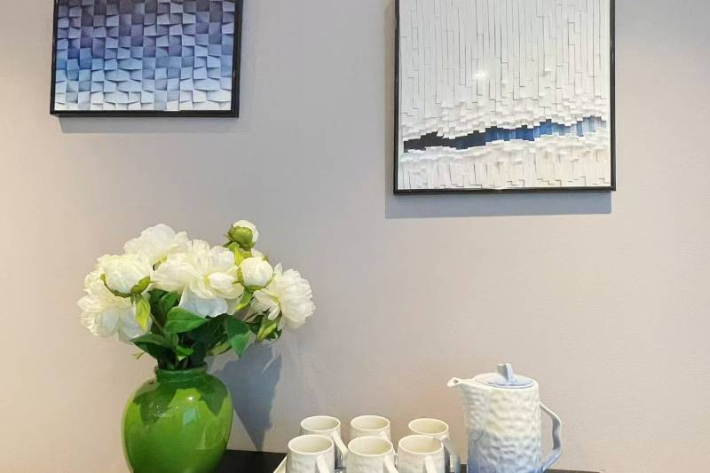
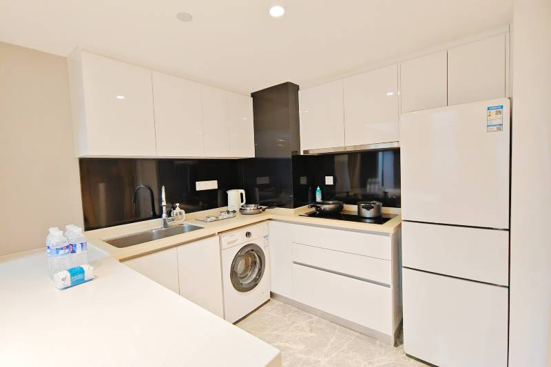
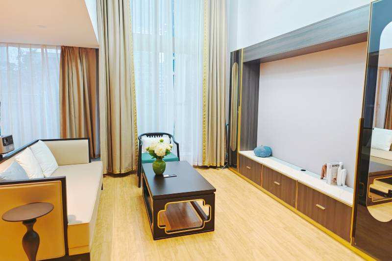
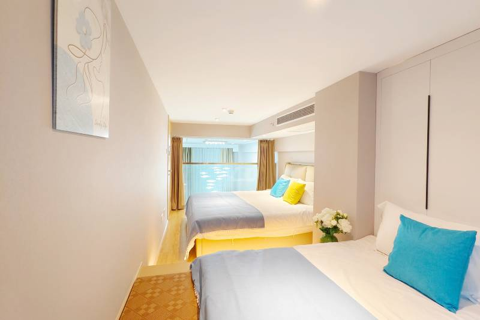
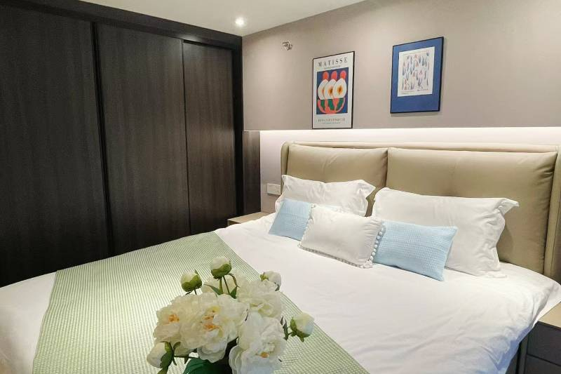
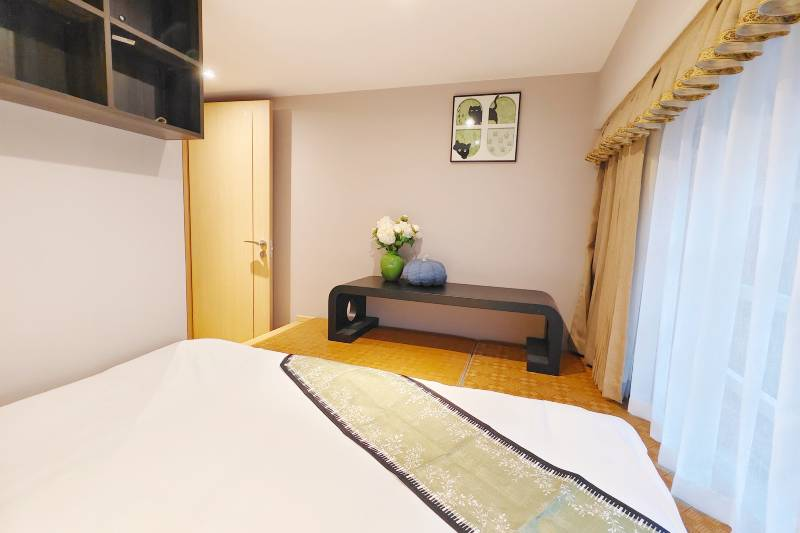
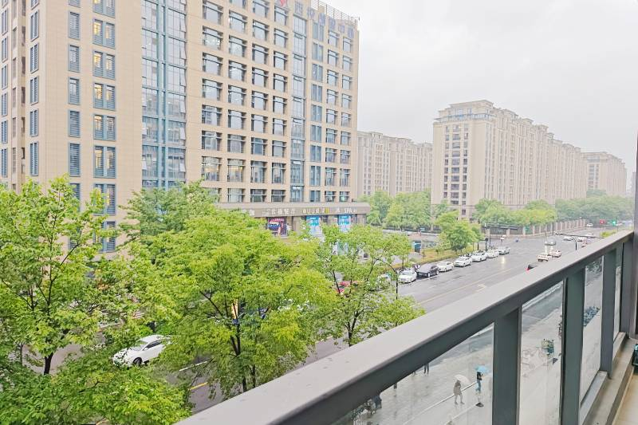
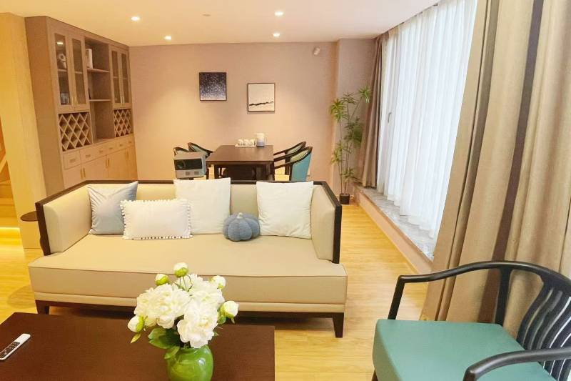

📅【杭州八天七夜 行程總表】
📌 杭州七月平均氣溫約 26–32 °C、濕熱午後可能有雷雨，出發前帶雨具 & 防曬用品最安心。
💰 車資：地鐵單程約 2–9 元 RMB、公車約 2 元 RMB、共享單車初半小時1–2 元 RMB；
🍽 餐食：早餐約 20–40 元 RMB/人、午餐 40–80 元、晚餐 80–150 元（風味餐）不含飲料與額外點單。
地鐵



地鐵 5 號線： 地鐵 5 號線橫跨杭州市區，並行駛過世界文化遺產－京杭大運河。
地鐵 19 號線： 又稱「杭州機場快線」，停靠站少，可從蕭山國際機場到杭州東站，如果你跟我一樣不喜歡轉車，這條真的省時很多。
🛶【住宿房型】
住宿地點 : 又又家度假小樓(杭州浙大紫金港西溪天街店)
📌 杭州，西湖區，蔣村街道楓樹路花蔣天街商業中心5號樓210。
房型照片









- 🚇 開幕時間：2024年 ; 房間數量：20。
- 🚌 又又家度假小樓地處龍湖西溪天街的在蔣村地鐵口，戶型客廳大，適合閨蜜聚會和家庭遊。 小樓在天街的商業綜合體裡面，樓下商業配套齊全，近購物中心，不管是商務出差，還是出門旅遊，皆可滿足購物、美食、旅遊等所有需求。客房裝飾精緻考究，溫馨舒適，loft為上下兩層，室內通透明亮，超大落地窗，冰箱、洗衣機設施齊全。每間客房配有衣架、獨立衛浴、高速wifi、24小時熱水，一次性洗漱用品等基礎設施。只為打造一處您在異鄉尋找歸屬的家。我們將秉承著“客戶至上，貼心服務”的理念，為到店的每一位客人帶來貼心熱情的服務，願每位來此遊玩的朋友都能留下深刻美好的回憶！。
- 🚴♂️ 共享單車超方便，尤其在西湖周邊短程移動。
- 🛶 西湖小船體驗本地風味，選官方船票比私人高價更划算。
| 星期日 | 星期一 | 星期二 | 星期三 | 星期四 | 星期五 | 星期六 |
|---|---|---|---|---|---|---|
| 6/28 | 6/29 | 6/30 | 7/1 | 7/2 | 7/3 | 7/4 |
| 7/5 | 7/6 | 7/7 | 7/8 | 7/9 | 7/10 | 7/11 |
| 7/12 | 7/13 | 7/14 | 7/15 | 7/16 | 7/17 | 7/18 |
| 7/19 | 7/20 | 7/21 | 7/22 | 7/23 | 7/24 | 7/25 |
☀️ 杭州7月氣候預估
🌡 平均 31–32°C 炎熱潮濕，雨量多，中午最熱、午後易有雷陣雨，備好防曬與雨具很重要！